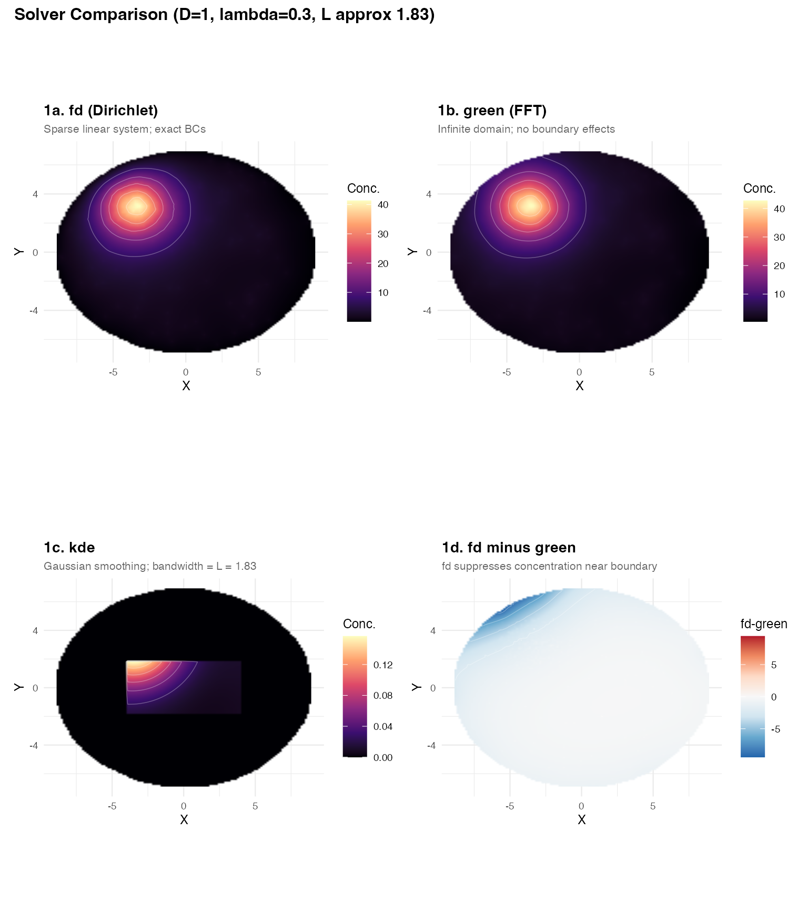
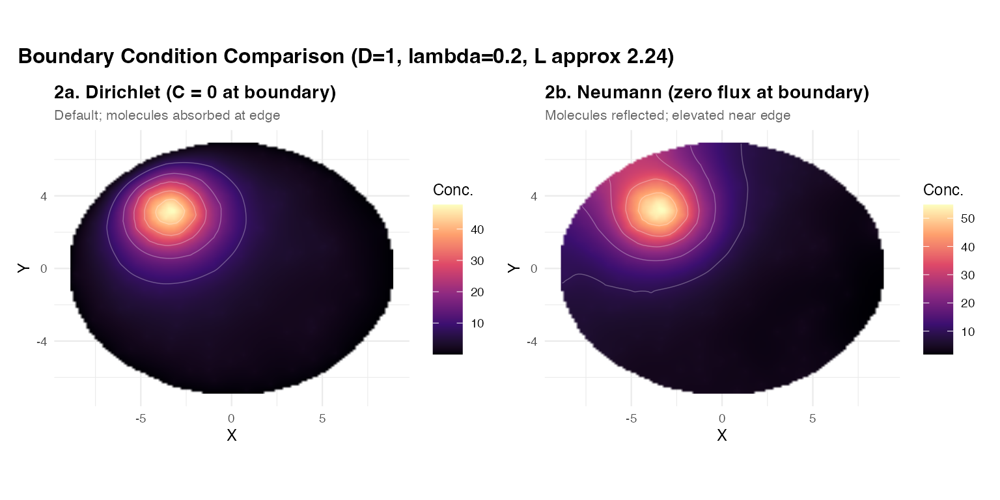
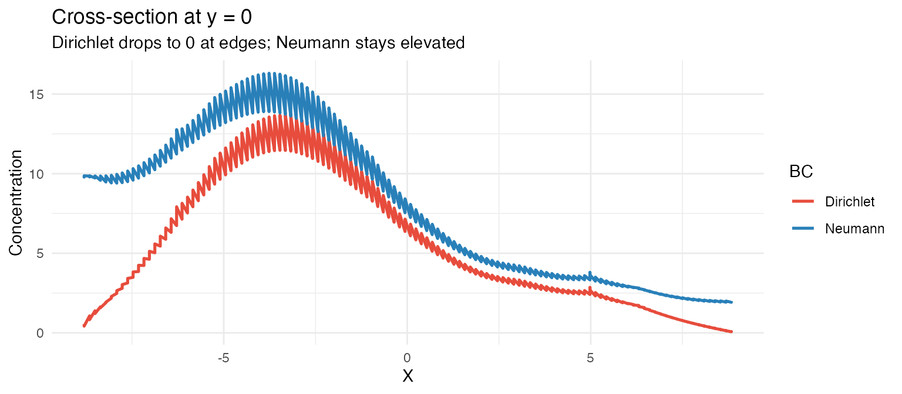
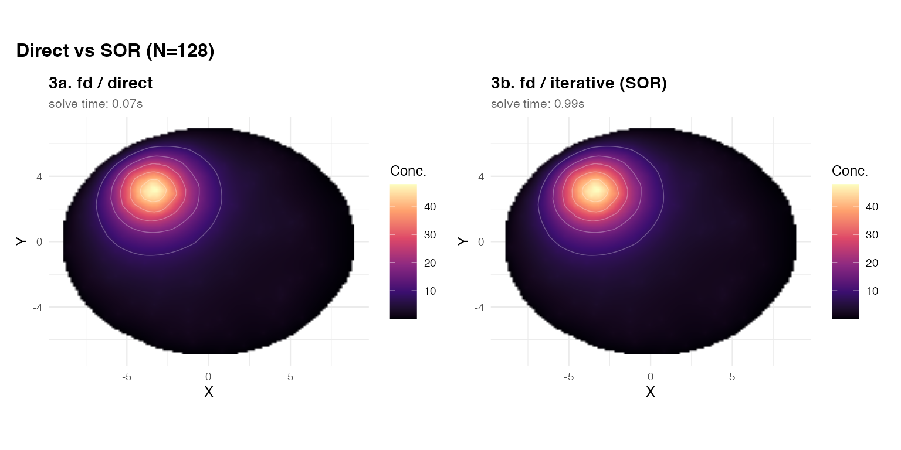
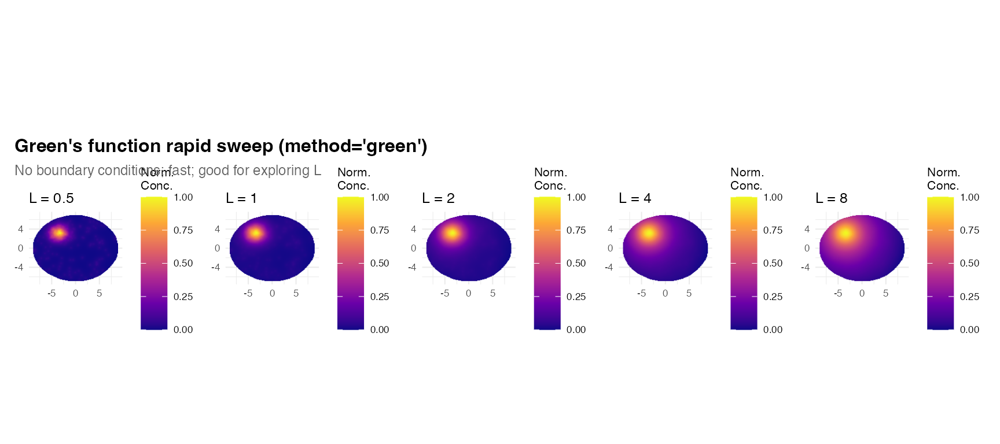

TissueField provides three solvers selected via the
method argument:
| Method | Algorithm | Boundary conditions | Speed | Best for |
|---|---|---|---|---|
"fd" |
Finite-difference sparse linear system | Exact (Dirichlet or Neumann) | Fast for N <= 400 | Default; recommended |
"green" |
FFT convolution with analytic | None (infinite domain) | Fast for all N | Parameter sweeps, large grids |
"kde" |
Gaussian kernel density | None | Very fast | Quick visualisation |
Shared tissue setup
# Kidney-bean shaped tissue
in_bean <- function(x, y)
(x/9)^2 + (y/7)^2 < 1 & sqrt((x - 4.5)^2 + y^2) >= 3.5
cands <- data.frame(x = runif(20000, -11, 11), y = runif(20000, -9, 9))
tissue_pts <- cands[in_bean(cands$x, cands$y), ][1:3000, ]
# Build mask with raster method (requires TissueMask)
if (requireNamespace("TissueMask", quietly = TRUE)) {
mask <- TissueMask::fit_spatial_mask(
tissue_pts, method = "raster",
raster_resolution = 200L, raster_sigma = 0.8,
raster_threshold = 0.15, verbose = FALSE
)
} else {
# Fallback: convex hull via sf
pts_sf <- st_as_sf(tissue_pts, coords = c("x", "y"))
mask <- st_convex_hull(st_union(pts_sf))
}
# Transcripts: cluster + background
mu <- st_union(mask)
inside_pts <- function(d) {
as.logical(st_within(st_as_sf(d, coords = c("x","y")), mu, sparse = FALSE)[,1])
}
tc_cl <- data.frame(x = rnorm(300, -3.5, 1.3), y = rnorm(300, 3.2, 0.9))
tc_bg_all <- data.frame(x = runif(800, -10, 10), y = runif(800, -8, 8))
tc_bg <- tc_bg_all[inside_pts(tc_bg_all), ][1:100, ]
tc <- rbind(tc_cl[inside_pts(tc_cl), ], tc_bg)1. Solver comparison: fd vs green vs kde
All three methods receive the same physics (, , ):
base_args <- list(
mask = mask,
transcript_coords = tc,
D = 1, lambda = 0.3,
grid_resolution = 128L,
verbose = FALSE
)
res_fd <- do.call(estimate_concentration_field,
c(base_args, list(method = "fd", fd_solver = "direct",
boundary_condition = "dirichlet")))
res_green <- do.call(estimate_concentration_field,
c(base_args, list(method = "green")))
res_kde <- do.call(estimate_concentration_field,
c(base_args, list(method = "kde",
kde_bandwidth = sqrt(1 / 0.3)))) # bandwidth = L
# fd - green difference map
res_diff <- res_fd
res_diff$field <- res_fd$field - res_green$field
# Helper to make a panel
panel <- function(result, tc_pts = NULL, title = "", subtitle = "",
palette = "magma", symmetric = FALSE) {
df <- field_to_df(result)
fc <- "field"
p <- ggplot(df, aes(x = x, y = y, fill = .data[[fc]])) +
geom_raster(interpolate = TRUE) + coord_equal() +
geom_contour(aes(z = field), color = "white",
alpha = 0.3, linewidth = 0.25, bins = 6) +
labs(title = title, subtitle = subtitle, x = "X", y = "Y") +
theme_minimal(base_size = 9) +
theme(plot.title = element_text(face = "bold"),
plot.subtitle = element_text(color = "grey40", size = 8))
if (symmetric) {
lim <- max(abs(df$field), na.rm = TRUE)
p + scale_fill_distiller(palette = "RdBu", limits = c(-lim, lim),
name = "fd-green", na.value = "transparent")
} else {
p + scale_fill_viridis_c(option = palette, name = "Conc.",
na.value = "transparent")
}
}
(panel(res_fd, title = "1a. fd (Dirichlet)",
subtitle = "Sparse linear system; exact BCs") +
panel(res_green, title = "1b. green (FFT)",
subtitle = "Infinite domain; no boundary effects")) /
(panel(res_kde, title = "1c. kde",
subtitle = paste0("Gaussian smoothing; bandwidth = L = ",
round(sqrt(1/0.3), 2))) +
panel(res_diff, title = "1d. fd minus green",
subtitle = "fd suppresses concentration near boundary",
symmetric = TRUE)) +
plot_annotation(
title = "Solver Comparison (D=1, lambda=0.3, L approx 1.83)",
theme = theme(plot.title = element_text(face = "bold", size = 12))
)
Key observations:
-
Panels 1a vs 1b: The interior fields are nearly
identical — both faithfully solve the screened Poisson PDE. The
fdandgreensolvers agree well away from the boundary. -
Panel 1d (difference):
fdcorrectly drives concentration to zero at the tissue edge (Dirichlet). Thegreensolver ignores the boundary and leaks concentration outward. Near-edge sources show the largest disagreement. - Panel 1c (kde): Gaussian smoothing produces a visually similar pattern but has no physical interpretation and no boundary enforcement.
2. Boundary conditions: Dirichlet vs Neumann
The fd solver supports two boundary conditions
controlled by boundary_condition:
-
"dirichlet"(default): at the tissue boundary. Molecules are absorbed at or degrade at the edge. Most appropriate for a histological section where the tissue edge is a hard barrier. -
"neumann": — zero normal flux; molecules are reflected at the boundary. Appropriate when modelling a sealed container or when the tissue edge is not a sink.
res_dir <- estimate_concentration_field(
mask, tc, D = 1, lambda = 0.2,
method = "fd", fd_solver = "direct",
boundary_condition = "dirichlet",
grid_resolution = 128L, verbose = FALSE
)
res_neu <- estimate_concentration_field(
mask, tc, D = 1, lambda = 0.2,
method = "fd", fd_solver = "direct",
boundary_condition = "neumann",
grid_resolution = 128L, verbose = FALSE
)
res_bcd <- res_dir
res_bcd$field <- res_neu$field - res_dir$field
(panel(res_dir, title = "2a. Dirichlet (C = 0 at boundary)",
subtitle = "Default; molecules absorbed at edge") +
panel(res_neu, title = "2b. Neumann (zero flux at boundary)",
subtitle = "Molecules reflected; elevated near edge")) +
plot_annotation(
title = "Boundary Condition Comparison (D=1, lambda=0.2, L approx 2.24)",
theme = theme(plot.title = element_text(face = "bold", size = 12))
)
# Cross-section at y approx 0
sl_fun <- function(res, lbl) {
df <- field_to_df(res)
s <- df[abs(df$y) < res$hy * 2 & !is.na(df$field), ]
s <- s[order(s$x), ]
s$BC <- lbl
s
}
sl_all <- rbind(sl_fun(res_dir, "Dirichlet"), sl_fun(res_neu, "Neumann"))
ggplot(sl_all, aes(x = x, y = field, color = BC)) +
geom_line(linewidth = 0.9) +
scale_color_manual(values = c("Dirichlet" = "#e74c3c", "Neumann" = "#2980b9")) +
theme_minimal(base_size = 11) +
labs(title = "Cross-section at y = 0",
subtitle = "Dirichlet drops to 0 at edges; Neumann stays elevated",
x = "X", y = "Concentration", color = "BC")
When does the choice matter? When sources are near the tissue edge, Dirichlet can substantially reduce the predicted local concentration compared to Neumann. For sources in the tissue interior, the two BCs give nearly the same field.
3. fd_solver: direct vs iterative (SOR)
The fd method offers two solvers:
-
"direct"(default): LU factorisation of the sparse matrix viaMatrix::solve(). Exact and fast for grids up to ~400 x 400. Memory cost scales as for a K-cell system. -
"iterative": Red-black Successive Over-Relaxation (SOR). Converges to withinsor_tolinsor_max_iteriterations. Lower peak memory; better for very large grids.
res_dir_v <- estimate_concentration_field(
mask, tc, D = 1, lambda = 0.2,
method = "fd", fd_solver = "direct",
grid_resolution = 128L, verbose = TRUE
)## ============================================================
## estimate_concentration_field
## ============================================================
## Method: fd | D: 1 | lambda: 0.2 | L: 2.23607 | N: 128 x 128
## BC: dirichlet | solver: direct
## ------------------------------------------------------------
## Transcripts: 398 used (0 external excluded)
## Rasterizing 128x128 grid...
## Inside-mask cells: 11412 (69.7%)
## Sparse system: 11412x11412, 56580 nnz
## Solve: 0.07s | Total: 0.12s | Range: [0.0321, 47.74]
## ============================================================
res_sor_v <- estimate_concentration_field(
mask, tc, D = 1, lambda = 0.2,
method = "fd", fd_solver = "iterative",
sor_omega = 1.7, sor_tol = 1e-6,
grid_resolution = 128L, verbose = TRUE
)## ============================================================
## estimate_concentration_field
## ============================================================
## Method: fd | D: 1 | lambda: 0.2 | L: 2.23607 | N: 128 x 128
## BC: dirichlet | solver: iterative
## ------------------------------------------------------------
## Transcripts: 398 used (0 external excluded)
## Rasterizing 128x128 grid...
## Inside-mask cells: 11412 (69.7%)
## SOR converged: iter=860, delta=9.95e-07
## Solve: 0.99s | Total: 1.04s | Range: [0.0321, 47.74]
## ============================================================
res_sor_diff <- res_dir_v
res_sor_diff$field <- res_dir_v$field - res_sor_v$field
(panel(res_dir_v, title = "3a. fd / direct",
subtitle = sprintf("solve time: %.2fs",
res_dir_v$diagnostics$elapsed_solve_s)) +
panel(res_sor_v, title = "3b. fd / iterative (SOR)",
subtitle = sprintf("solve time: %.2fs",
res_sor_v$diagnostics$elapsed_solve_s))) +
plot_annotation(
title = "Direct vs SOR (N=128)",
theme = theme(plot.title = element_text(face = "bold", size = 12))
)
For N = 128, the two solvers agree to high precision.
The direct solver is typically faster here. At N = 512 or
above, the iterative SOR becomes competitive because the LU
factorisation becomes expensive.
SOR tuning:
-
sor_omega = 1.7is a safe default. Values closer to 2 can accelerate convergence but may cause divergence. -
sor_tol = 1e-6is sufficient for visualisation. Tighten to1e-8for quantitative analysis. - Increase
sor_max_iterif you see a convergence warning.
4. Solver selection guide
| Situation | Recommendation |
|---|---|
| N <= 400, standard use | method=“fd”, fd_solver=“direct” |
| Need exact Dirichlet or Neumann BCs | method=“fd” |
| Holey mask (vessels, lumens) | method=“fd” (green/kde ignore interior holes) |
| N > 400 or large memory constraint | method=“fd”, fd_solver=“iterative” |
| Fast parameter sweep over many L values | method=“green” |
| Quick visual sanity check | method=“kde” |
5. Green’s function advantage: rapid L sweeps
Because "green" avoids assembling and factorising a
sparse matrix, it is faster per call, especially at high resolution.
This makes it ideal for exploring many diffusion lengths quickly:
L_sweep <- c(0.5, 1.0, 2.0, 4.0, 8.0)
sw_plots <- lapply(L_sweep, function(Lv) {
r <- estimate_concentration_field(
mask, tc, diffusion_length = Lv, D = 1,
method = "green", grid_resolution = 128L, verbose = FALSE
)
df <- field_to_df(r)
rng <- range(df$field, na.rm = TRUE)
df$fn <- (df$field - rng[1]) / diff(rng)
ggplot(df, aes(x = x, y = y, fill = fn)) +
geom_raster(interpolate = TRUE) +
scale_fill_viridis_c(option = "plasma", name = "Norm.\nConc.",
limits = c(0, 1), na.value = "transparent") +
coord_equal() + theme_minimal(base_size = 8) +
labs(title = sprintf("L = %g", Lv), x = NULL, y = NULL)
})
wrap_plots(sw_plots, nrow = 1) +
plot_annotation(
title = "Green's function rapid sweep (method='green')",
subtitle = "No boundary conditions; fast; good for exploring L",
theme = theme(plot.title = element_text(face = "bold", size = 12),
plot.subtitle = element_text(size = 9, color = "grey40"))
)